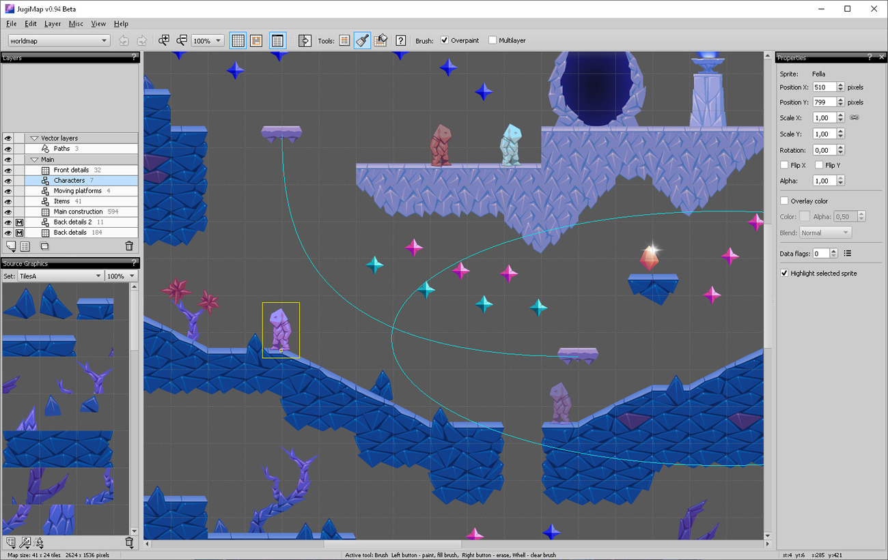

JugiMap API Demo Test
Downloading...
Web version built with nCine game engine.
JugiMap API Demo Test is an application which utilizes many features of JugiMap API and serves as an extensive programming example of how to set up and manage a relatively complex scene.
The application source code includes:
- Programming a scene with world, parallax and screen maps.
- Loading maps.
- Initializing maps.
- Initializing map cameras.
- Creating and adding text layers and drawing layers to maps.
- Manually creating a map with a layer and a sprite.
- Starting scene.
- Updating scene.
- Programming game entities using jugimap sprites.
- Setting up and updating entities.
- Managing sprite frame animation.
- Using sprite colliders with a custom collision system.
- Dynamically adding and removing entities.
- Programming a simple GUI.
- Creating and using buttons from sprites and text objects.
- Physics test (for engines which provide a 2d physics system).
- Using sprites as dynamic objects in physics simulation.
The source code is available for all supported game engines: github.com/Jugilus/JugiMapAPI/tree/master/examples_c%2B%2B/ApiDemoTest
The project files for JugiMap Editor: apiDemoTestEditor.zip (also included with JugiMap Editor as an example)
A screenshot of the world map in JugiMap Editor: 
JugiMap web resources